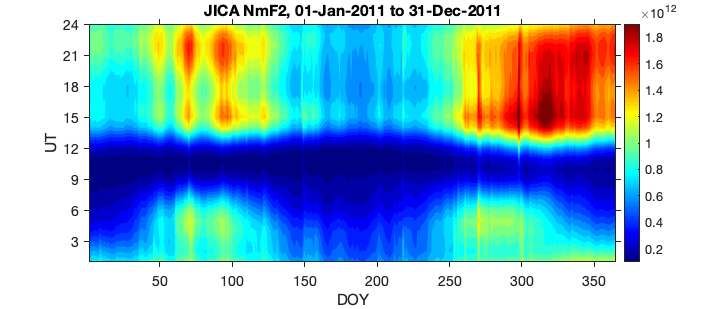
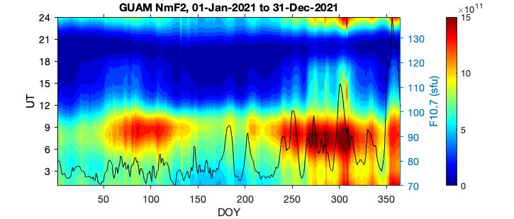
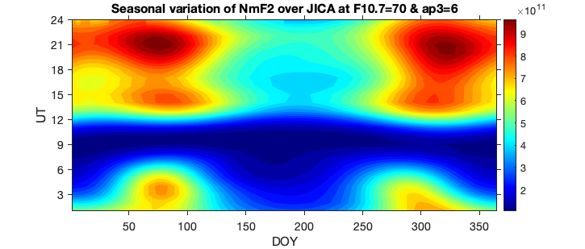
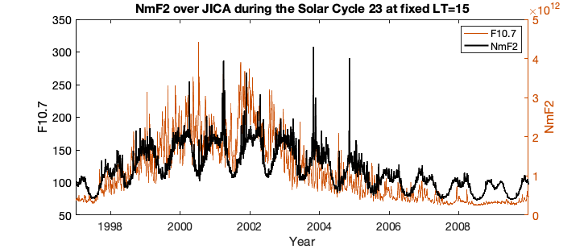

Contents
% examples
Example 1
Reproduce 2011 NmF2 over JICA
station_name='JICA'; sdate = datetime([2011 1 1 0 0 0]); edate = datetime([2011 12 31 23 0 0]); time = (sdate:hours(1):edate)'; time = reshape(time,24,[]); [fof2,nmf2] = call_nmf2(station_name,time); figure('Position',[3135 850 725 309]); contourf(nmf2,30,'LineStyle','none') colormap jet colorbar clim([.1 1.9]*10^12) xlabel('DOY'); ylabel('UT'); title([station_name,' NmF2, ',char(sdate,'dd-MMM-yyyy'),' to ',char(edate,'dd-MMM-yyyy')]) set(gca,'FontSize',14,'ytick',0:3:24,'tickdir','out');
Example 2
Reproduce 2021 NmF2 over GUAM. Also plot the f10.7 index and save model output as ASCII file Other indices can also be plotted from geoind structure
station_name='GUAM'; Save_Output=1; out_dir = 'output_ASCII'; out_name = [station_name '.txt']; sdate = datetime([2021 1 1 0 0 0]); edate = datetime([2021 12 31 23 0 0]); time = (sdate:hours(1):edate)'; time = reshape(time,24,[]); [fof2,nmf2,geoind] = call_nmf2(station_name,time); figure('Position',[3135 850 725 309]); contourf(nmf2,30,'LineStyle','none') colormap jet colorbar clim([0 15]*10^11) xlabel('DOY'); ylabel('UT'); set(gca,'FontSize',14,'ytick',0:3:24,'tickdir','out'); yyaxis right plot(geoind.f107(1,:),'-k'); ylabel('F10.7 (sfu)') title([station_name,' NmF2, ',char(sdate,'dd-MMM-yyyy'),' to ',char(edate,'dd-MMM-yyyy')]) set(gca,'FontSize',14) if Save_Output fname = [out_dir filesep out_name]; data_out = table; data_out.Year = time.Year(:); data_out.Month = time.Month(:); data_out.Day = time.Day(:); data_out.Hour = time.Hour(:); data_out.('NmF2x10^11') = round(nmf2(:)/10^11,3); data_out.foF2 = round(fof2(:),2); data_out.F107 = geoind.f107(:); data_out.FISM2 = round(geoind.fism2(:),4); data_out.Ap3 = geoind.ap3(:); if ~exist(out_dir,'dir') mkdir(out_dir) end writetable(data_out,fname,'Delimiter','tab') end
Example 3
Plot seasonal variation over JICA at fixed solar and geomagnetic activity if needed, save figure as PNG file
station_name='JICA'; f107 = 70; ap3 = 6; Save_Figure = 1; % fism = f1072fism(f107); % get fism value corresponding to F10.7 doy = (1/24:1/24:365)'; doy = reshape(doy,24,[]); [fof2,nmf2] = call_nmf2(station_name,doy,fism,ap3); figure('Position',[3135 850 725 309]); contourf(nmf2,30,'LineStyle','none') colormap jet colorbar xlabel('DOY'); ylabel('UT'); set(gca,'FontSize',14,'ytick',0:3:24,'tickdir','out'); title(['Seasonal variation of NmF2 over ',station_name,' at F10.7=' num2str(f107) ' & ap3=' num2str(ap3)]); if Save_Figure == 1 plotname=[station_name,'_f107_',num2str(f107)]; saveas(gcf, plotname, 'png') end
Example 4
Plot NmF2 over JICA at fixed LT=15 during the Solar Cycle 23
station_name='JICA'; lon = -76.8; LT = 15; UT = round(LT-lon/15); % nearest UT hour sdate = datetime([1997 1 1 UT 0 0]); edate = datetime([2009 12 31 UT 0 0]); time = (sdate:days(1):edate)'; [fof2,nmf2,geoind] = call_nmf2(station_name,time); figure('Position',[3135 850 725 309]); plot(time,geoind.f107,'color',[0.8 0.3 0]) xlabel('Year'); ylabel('F10.7') yyaxis right plot(time,nmf2,'-k','LineWidth',2); ylabel('NmF2') legend({'F10.7','NmF2'}) title(['NmF2 over ' station_name ' during the Solar Cycle 23 at fixed LT=' num2str(LT)]) set(gca,'FontSize',14,'YColor',[0.8 0.3 0])